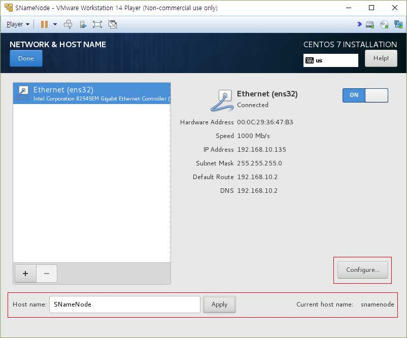

위 책에서는 하둡을 이용하기 위해 4개의 CentOs 설치가 요구됩니다.
각각의 OS는 네임노드, 세컨더리네임노드, 데이터노드 1,2 의 역할을 하게 됩니다.
네임노드와 세컨더리의 경우에는 GUI가 필요하겠지만 책의 실습 요구 상 세컨더리네임노드도 데이터노드로 사용하기 때문에
네임노드만 GUI 환경으로 사용하겠습니다.
설치 시 GUI설치를 하게되면 GNOME을 설치하게 되는데 상당히 무겁고 버벅거리고 부팅, 종료 속도가 느립니다.
그래서 저는 최소설치를 하여 필요한 요소들을 설치 후 GUI 설치를 따로 하겠습니다.

위 그림에 보이듯 설치시 네트워크 설정 부분에서 호스트 네임을 변경 가능합니다. 여기서 각각의 호스트 네임을 설정하고 설치합니다.
그리고 덤으로 할당된 IP주소도 할당이 가능합니다.
configure 버튼을 눌러서

IPv4 Settings 탭에 가서 Add 버튼을 누르고 원하는 IP를 입력한 뒤 Save를 하면 고정된 아이피가 할당된 것을 확인할 수 있습니다.
(설정부분의 이름이 Additional static address라서 고정 IP 부여입니다.)
보시듯이 IP가 변경되었습니다.
저는 그래서, 각각 OS에 IP 할당을
NameNode 192.168.10.100
SNameNode 192.168.10.100
DataNode1 192.168.10.100
DataNode2 192.168.10.100
이렇게 하였습니다.
각각 설치를 완료하고 나면 기본적인 툴과 필요한 것들을 설치할 차례입니다.
먼저, 루트계정으로 로그인을 한 뒤, 터미널에 입력합니다.
[root@NameNode ~]# yum -y update
[root@NameNode ~]# yum install -y net-tools
(net-tools를 설치하지 않으면 ifconfig등의 기능을 사용할 수 없습니다.)
[root@NameNode ~]# ifconfig
여러번 시도 해 보았으나 바꾸고 나면 문제가 생겨서 그대로 쓰기로 하였습니다.
그래서 확인된 IP는
NameNode 192.168.10.133
SNameNode 192.168.10.135
DataNode1 192.168.10.136
DataNode2 192.168.10.137
입니다.
[
root@
NameNode ~]#
echo $LANG
en_US.UTF-8
기본 설정이 UTF-8로 되어있으므로 넘어가겠습니다.
다음은 JAVA를 설치할 차례입니다.
Oracle 사이트에 들어가서 JAVA SE의 최신버전을 다운받아야 하는게 정석이지만,
CLI 모드이기도 하고 약간 귀찮기도 하니 yum으로 설치하겠습니다.
[
root@
NameNode ~]#
yum list java*jdk-devel
Loaded plugins: fastestmirror
Loading mirror speeds from cached hostfile
* base: data.nicehosting.co.kr
* extras: data.nicehosting.co.kr
* updates: data.nicehosting.co.kr
Avilable Packages
java-1.6.0-openjdk-devel.x86_64
java-1.7.0-openjdk-devel.x86_64
java-1.8.0-openjdk-devel.i686
java-1.8.0-openjdk-devel.x86_64
여기서 나온 것들 중, i686은 32비트 운영체제를 위한 것이므로 무시하고, 맨 밑에 있는 openjdk의 최신버전을 설치하겠습니다.
[
root@
NameNode ~]#
yum install -y java-1.8.0-openjdk-devel.x86_64
[
root@
NameNode ~]#
javac -version
javac 1.8.0_151
[
root@
NameNode ~]#
which javac
/bin/javac
[
root@
NameNode ~]#
readlink -f /bin/javac
/usr/lib/jvm/java-1.8.0-openjdk-1.8.0.151-5.b12.el7_4.x86_64/bin/javac
설치경로는
/usr/lib/jvm/java-1.8.0-openjdk-1.8.0.151-5.b12.el7_4.x86_64
입니다.
환경변수에 추가하도록 하겠습니다.
[
root@
NameNode ~]#
vi /etc/profile
맨 하단으로 가서 추가합니다.
export JAVA_HOME=/usr/lib/jvm/java-1.8.0-openjdk-1.8.0.151-5.b12.el7_4.x86_64
export PATH=$PATH:$JAVA_HOME/bin
export CLASS_PATH="."
[
root@
NameNode ~]#
source /etc/profile
[
root@
NameNode ~]#
$JAVA_HOME/bin/javac -version
javac 1.8.0_151
다음 단계는 SSH설정 단계입니다.
설정에 앞서 호스트 설정을 먼저 하겠습니다.
[
root@
NameNode ~]#
vi /etc/hosts
(맨 아랫줄에 추가합니다.)
192.168.10.133 NameNode
192.168.10.135 SNameNode
192.168.10.136 DataNode1
192.168.10.137 DataNode2
[
root@
NameNode ~]#
yum install -y openssh*
[
root@
NameNode ~]#
systemctl restart network
[
root@
NameNode ~]#
vi /etc/ssh/sshd_config
(#Port 22 부분의 #을 지운다.)
[
root@
NameNode ~]#
systemctl start sshd.service
[
root@
NameNode ~]#
firewall-cmd --zone=public --add-port=22/tcp --permanent
[
root@
NameNode ~]#
firewall-cmd --reload
문제를 먼저 해결하고 진행하도록 하겠습니다.
[
root@
NameNode ~]#
visudo
root ALL=(ALL) ALL
(이 부분을 찾아서 아래에 추가합니다.)
hadoop ALL=(ALL) ALL
이제 네임노드로 SSH 공개키를 만들어 나머지 데이터 노드에 뿌리는 작업을 합니다.
[
hadoop@
NameNode ~]$
ssh-keygen

위와 같이 나오면 공개키가 만들어진 겁니다.
이제 데이터 노드에 공개키를 나눠주겠습니다.
[
hadoop@
NameNode ~]$
ssh-copy-id -i /home/hadoop/.ssh/id_rsa.pub hadoop@SNameNode
/bin/ssh-copy-id: INFO: Source of key(s) to be installed: "/home/hadoop/.ssh/id_rsa.pub"
The authenticity of host 'snamenode (192.168.10.135)' can't bo established.
ECDSA key fingerprint is SHA256:Mg2Je/..........
ECDSA key fingerprint is MD5:39:87:.............
Are you sure you wnad to continue connecting (yes/no)? yes
/bin/ssh-copy-id: INFO: attempting to log in with the new key(s), to filter out any that are already installed
/bin/ssh-copy-id: INFO: 1 key(s) remain to be installed -- if you are prompted now it is to install the new keys hadoop@snamenode's passwd:
Number of key(s) added: 1
Now try logging into the machine, with: "ssh 'hadoop@SNameNode'"
and check to make user that only the key(s) you wanted were added.
[
hadoop@
NameNode ~]$
ssh SnameNode
[
hadoop@
SNameNode ~]$
[
hadoop@
SNameNode ~]$
exit
logout
Connection to snamenode closed.
[
hadoop@
NameNode ~]$
ssh-copy-id -i /home/hadoop/.ssh/id_rsa.pub hadoop@DataNode1
/bin/ssh-copy-id: INFO: Source of key(s) to be installed: "/home/hadoop/.ssh/id_rsa.pub"
The authenticity of host 'datanode1 (192.168.10.136)' can't bo established.
ECDSA key fingerprint is SHA256:Mg2Je/..........
ECDSA key fingerprint is MD5:39:87:.............
Are you sure you wnad to continue connecting (yes/no)? yes
/bin/ssh-copy-id: INFO: attempting to log in with the new key(s), to filter out any that are already installed
/bin/ssh-copy-id: INFO: 1 key(s) remain to be installed -- if you are prompted now it is to install the new keys hadoop@datanode1's
passwd:
Number of key(s) added: 1
Now try logging into the machine, with: "ssh 'hadoop@DataNode1'"
and check to make user that only the key(s) you wanted were added.
[
hadoop@
NameNode ~]$
ssh-copy-id -i /home/hadoop/.ssh/id_rsa.pub hadoop@DataNode2
/bin/ssh-copy-id: INFO: Source of key(s) to be installed: "/home/hadoop/.ssh/id_rsa.pub"
The authenticity of host 'datanode2 (192.168.10.137)' can't bo established.
ECDSA key fingerprint is SHA256:Mg2Je/..........
ECDSA key fingerprint is MD5:39:87:.............
Are you sure you wnad to continue connecting (yes/no)? yes
/bin/ssh-copy-id: INFO: attempting to log in with the new key(s), to filter out any that are already installed
/bin/ssh-copy-id: INFO: 1 key(s) remain to be installed -- if you are prompted now it is to install the new keys hadoop@datanode2's
passwd:
Number of key(s) added: 1
Now try logging into the machine, with: "ssh 'hadoop@DataNode2'"
and check to make user that only the key(s) you wanted were added.
이제 하둡을 설치할 차례입니다.
wget을 통해 하둡을 다운받을건데 최소설치를 했기 때문에 wget도 설치해야 합니다.
[
hadoop@
NameNode ~]$
sudo yum install -y wget
[
hadoop@
NameNode ~]$
wget "http://www.eu.apache.org/dist/hadoop/common/hadoop-1.2.1/hadoop-1.2.1.tar.gz"
[
hadoop@
NameNode ~]$
tar xvfz hadoop-1.2.1.tar.gz
[
hadoop@
NameNode ~]$
rm hadoop-1.2.1.tar.gz
[
hadoop@
NameNode ~]$
ls
hadoop-1.2.1